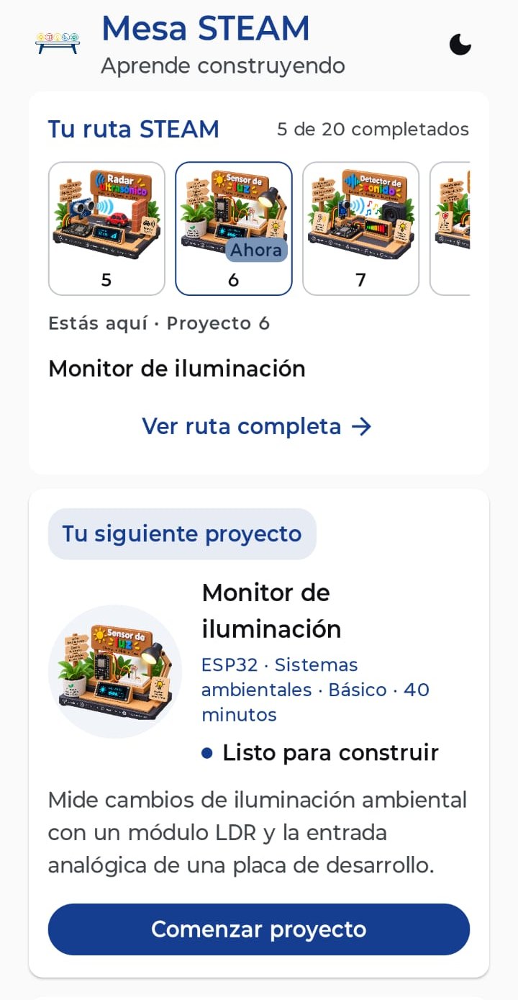
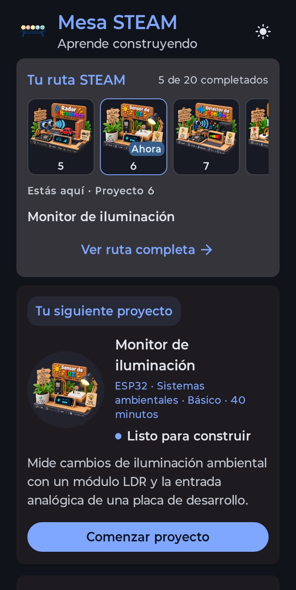
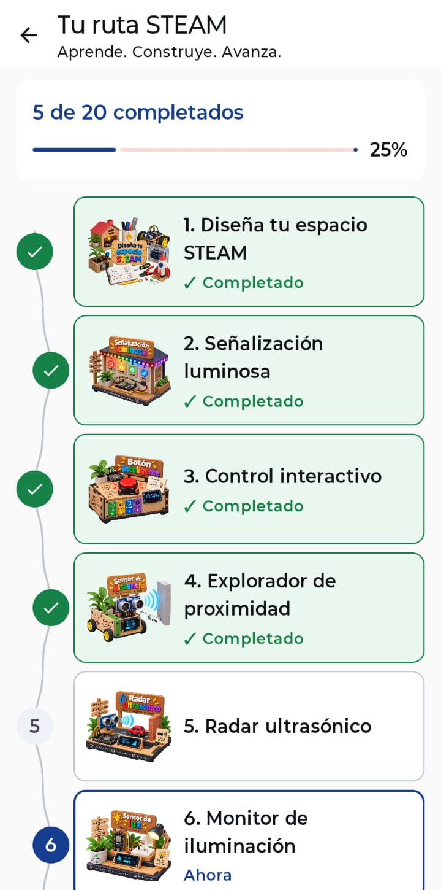
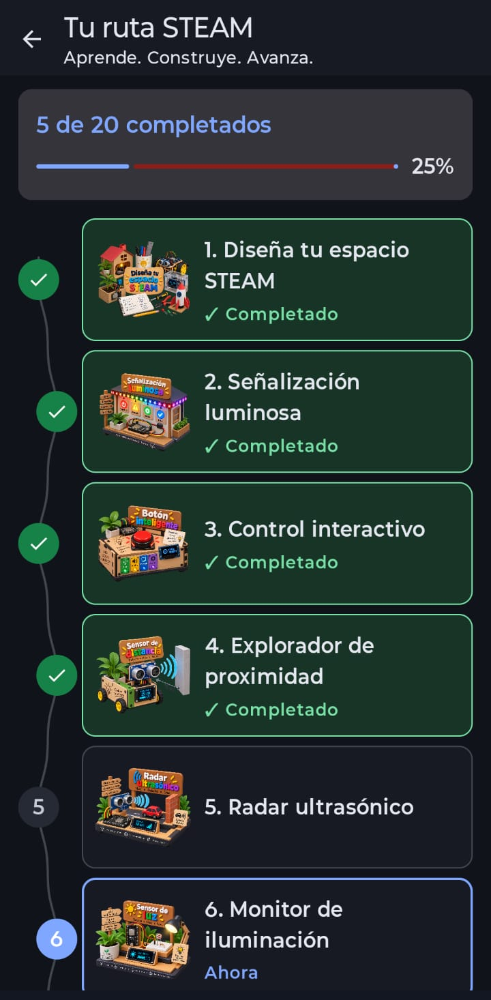
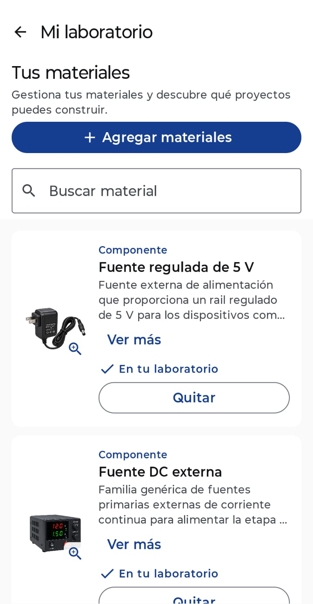
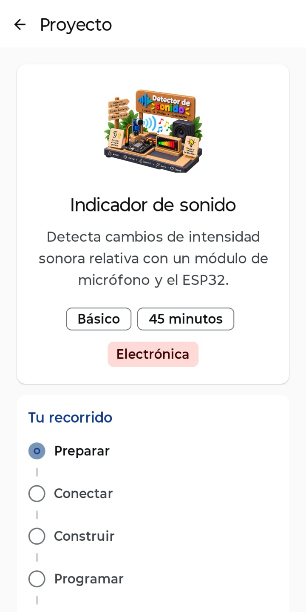

Proyectos guiados
Consulta materiales, conexiones, pasos y código para avanzar en cada construcción.
Aplicación educativa
Aprende construyendo
Mesa STEAM es una aplicación educativa orientada al aprendizaje práctico mediante proyectos guiados de programación, electrónica, automatización, robótica y tecnologías STEAM.
Conecta lo que quieres construir con los materiales que tienes y te acompaña desde la idea hasta las conexiones y los pasos de cada proyecto.
Conocer la aplicación
Aprendizaje práctico
Una herramienta para explorar proyectos de tecnología y aprender mediante la construcción. Reúne una ruta de proyectos, un catálogo de materiales y guías que ayudan a pasar de la curiosidad a la práctica.
Consulta materiales, conexiones, pasos y código para avanzar en cada construcción.
Registra los materiales que posees y descubre qué proyectos puedes construir con ellos.
Sigue una secuencia progresiva de proyectos y revisa tu avance sin perder de vista lo que viene.
Cómo funciona
Aprender haciendo
La propuesta invita a observar, conectar, programar, probar y ajustar. Cada proyecto es una oportunidad para relacionar conceptos con objetos y resultados que puedes examinar directamente.
Vista de la aplicación
Conoce algunas de las experiencias y herramientas disponibles en Mesa STEAM.





Estado actual
Mesa STEAM se encuentra en preparación para su publicación. Cuando exista una ficha oficial en Google Play, el acceso se añadirá en esta sección.
Contacto
Si tienes preguntas sobre la aplicación, puedes escribir a lelyliliana@gmail.com.
{kind=link}
{kind=link}
{kind=link}
{kind=link}
{kind=link}
{kind=link}